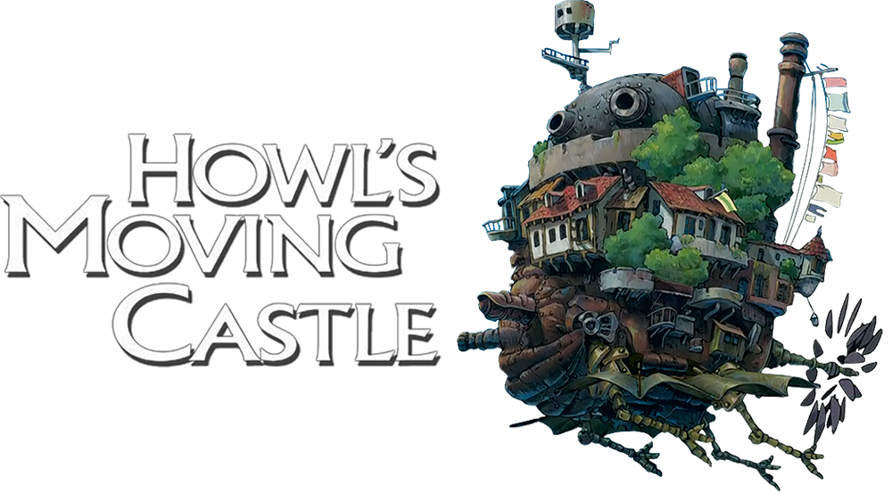
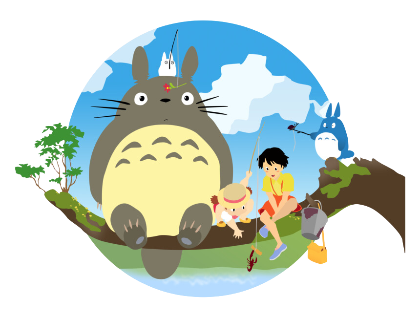
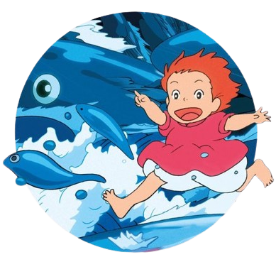

Static Cards
Susuwatari
The Soot Sprites, also known as All Blacky are spirits that appear in the films My Neighbor Totoro and Spirited Away.

Jiji
Jiji is Kiki's companion as she is training to become a full-fledged witch. One time, he had to pretend to be a stuffed cat for a boy's birthday gift. The real stuffed cat, which looked exactly like him, was lost in the forest.


Calcifier
Calcifer is a Fire Demon in a magical contract with Wizard Howl. He used to be a falling star, whom Howl was able to catch before he fell to earth and extinguished.

Catbus
The Catbus is a transporting animal bus-looking character in My Neighbor Totoro. He is met by Mei, Satsuki and Totoro.

Granmamare
Granmamare is the Goddess of Mercy and the Queen of the ocean, wife of Fujimoto and the mother of Ponyo and all her sisters.
Dynamic Cards
Susuwatari
The Soot Sprites, also known as All Blacky are spirits that appear in the films My Neighbor Totoro and Spirited Away.
Jiji
Jiji is Kiki's companion as she is training to become a full-fledged witch. One time, he had to pretend to be a stuffed cat for a boy's birthday gift. The real stuffed cat, which looked exactly like him, was lost in the forest.
Calcifer
Calcifer is a Fire Demon in a magical contract with Wizard Howl. He used to be a falling star, whom Howl was able to catch before he fell to earth and extinguished.
Catbus
The Catbus is a transporting animal bus-looking character in My Neighbor Totoro. He is met by Mei, Satsuki and Totoro.
Granmamare
Granmamare is the Goddess of Mercy and the Queen of the ocean, wife of Fujimoto and the mother of Ponyo and all her sisters.